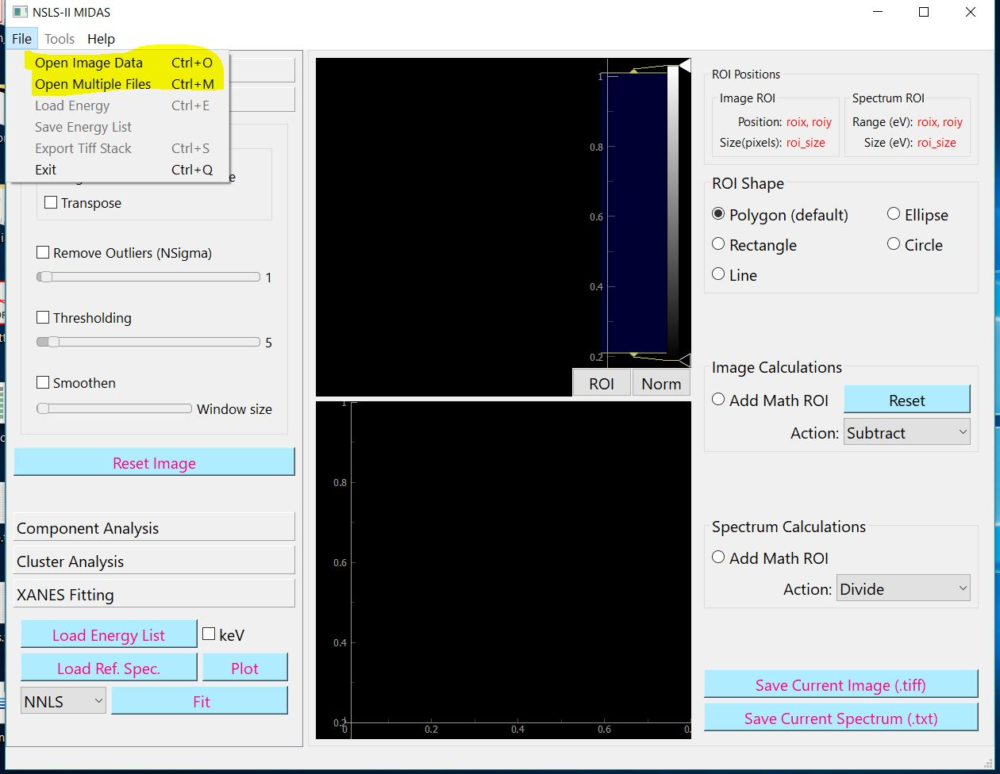
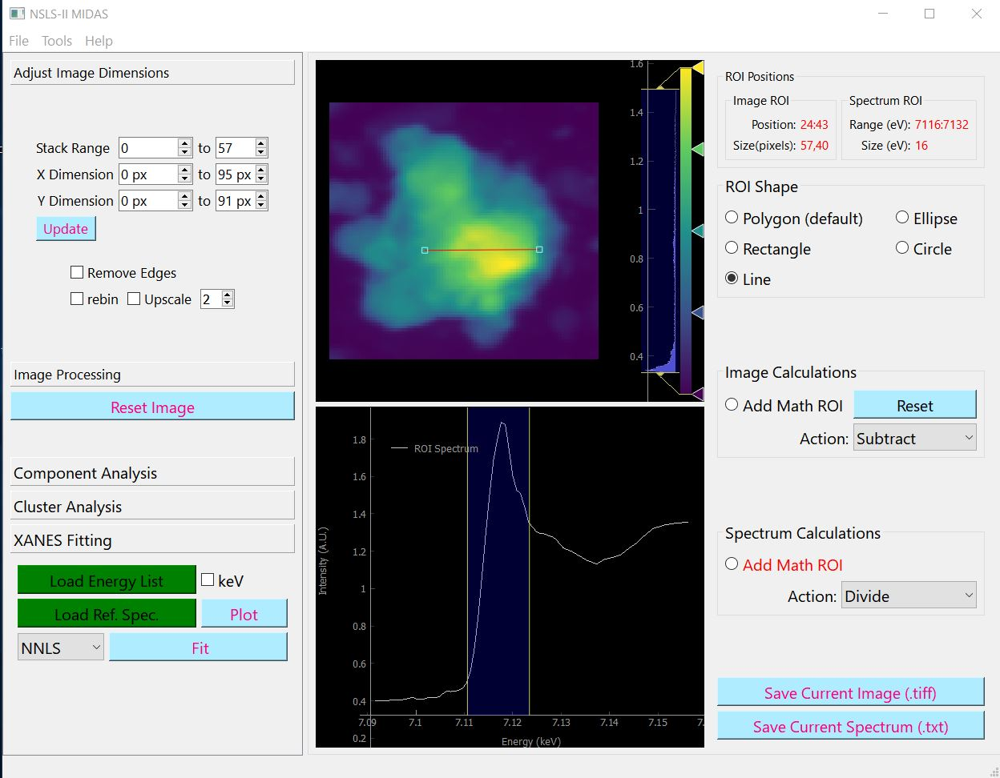

Loading an Image¶
Supported Formats¶
XRF Data¶
MIDAS can unpack fluorescence .h5 data from NSLS-II beamlines, HXN, XFM, SRX, and TES.XRF data will be normalized with the I0 (scalar) value on the file.
2D-XANES Data¶
2D and 3D tiff images (stacks). The list of energies has to be loaded as a separate tiff file (see load energy section below)
To open the above data types use the “Open Image Data” option in the File menu and select the file.
Load Energy¶
You can load it using the following methods,
file menu option ‘Load Energy’.
if you name the energy txt file matching the image file name, the program loads it automatically (like ‘test.tiff’ , ‘test.txt’).
In the folder you exported xanes data from the beamline there should be a file named ‘maps_log_tiff.txt’. Copy this to the same folder as the image file, then Midas automatically load energy when you open the image.
Create an image stack¶
You can also create a 3D image stack from a selection of single tiff files. To do so choose “Open Multiple Files” options from the File menu.
Once loaded correctly you should see the image on the top panel and the spectrum on the bottom panel. In case of incorrect formatting or unsupported formats, the bottom left corner of the program shows the error.
Also see the Video Tutorial